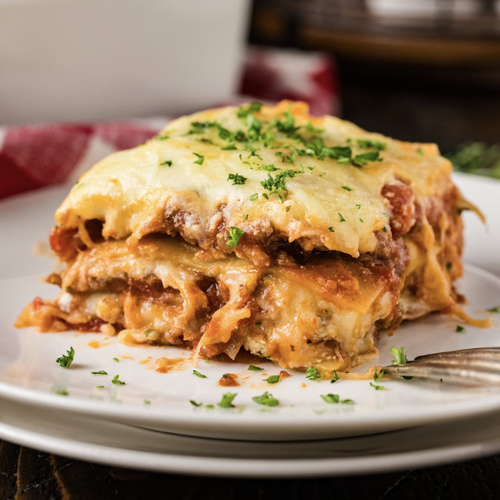

Lasagna
Home

Lasagna is a classic Italian baked casserole made of stacked, wide, flat
pasta sheets alternated with savory fillings like ragù, béchamel sauce,
and various cheeses like ricotta, mozzarella, and Parmesan.
Recipes
- Spices
- Garlic
- Ricotta Cheese
- Pasta Sauce
- Beef & Sausage
- Mozarella
- Egg
- Parsley
- Lasagna
- Onion
- Tomato Paste
- Parmesan
Steps
-
Boil pasta: In a large pot of salted water boil lasagna noodles per the
recipe below.
-
Prepare meat sauce: Cook sausage and beef with onion and garlic. Drain
well, add the pasta sauce (I love this brand) & simmer it for a few
minutes to thicken.
-
Combine cheese mixture: Stir the cheese mixture together in a bowl.
-
Layer & bake: Layer the meat sauce and cheese mixture with lasagna
noodles and bake until the top of the lasagna is golden brown.